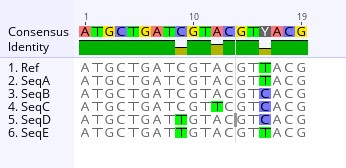

19 Genomic Analysis
⬜ Developing Hypotheses
⬜ Sample Collection
⬜ Outbreak Investigation
⬜ Sequencing
⬜ Bioinformatics
üü© Molecular Epidemiology
⬜ Public Health Implementation
The team met to discuss what kind of genomic analyses could be performed to help visualize the sequencing data of the outbreak. While the MSA shows us exactly where genetic differences occur in the sequences, a phylogenetic tree summarizes those differences into a branching diagram that helps us trace the virus’s evolutionary history and how it may have spread from host to host. They decided to construct a pairwise distance matrix and a phylogenetic tree using the sequencing alignment. The pairwise distance matrix and phylogenetic tree are examples of two essential tools in genomic and molecular epidemiology. These analyses would allow them to determine how closely related viral genomes were, whether the outbreak originated from an animal spillover event, and how the virus was evolving over time.
Example illustating a sequence alignment

“Uhm”, raised the hand of one of the Local Health Jurisdiction Epidemiologists. “I understand alignments after looking at the sequence alignment results the Bioinformaticians generated. But I am a bit rusty when it comes to pairwise distance matries and phylogenetic trees. Perhaps one of you could explain it to me?”
“Sure thing”, exclaimed one of the Molecular Epidemiologists. Let’s start with pairwise distance matrices.
19.1 Pairwise Distance Matrices
A pairwise distance matrix is a table that quantifies the genetic differences between sequences by counting single nucleotide polymorphisms (SNPs). SNPS are individual base differences at specific nucleotide posititions in the genome. It helps to determine how closely related two samples are and whether genetic clustering aligns with known epidemiological links.
Each cell in the matrix represents the number of SNP differences between a pair of genome sequences. The smaller the number, the more similar the sequences are. A value of 0 means the sequences are identical.
Computing pairwise distance matrices is a relatively straightfoward process with several steps. First the sequence are aligned (or arranged to where the sequences line up together). In this case, each viral genome would be aligned to the reference genome to detect differences in nucleotide positions. Next, one would count the SNP differences. Each genome is compared and the number of nucleotide differences are counted. This produces a matrix where row = column (since sequence A vs B is the same as B vs A). Lastly, heatmaps can be generated from the matrices to give a visual representation using a color scheme.
Example illustrating a Pairwise Distance Matrix This pairwise distance compares the number of mutation differences between two sequences. For example, the number of mutation difference, also known as the genetic distance, between Sequence A and the reference sequence is 0, meaning that the sequences are identical and possess no differences in mutations. However, Sequence D has a genetic distance of 2 when compared to the reference sequence, meaning that there are 2 mutations not shared between the two sequences. As such, Sequence A is more closely related to the reference than Sequence D. In terms of tracing how the virus spreads or its transmission, it is likely that the reference and Sequence A belong to the same transmission chain than that of the reference and Sequence D.
Example illustrating a heatmap of a pairwise distance matrix

“I see now, thank you so much! That makes sense.” Smiled the Local Health Jurisdiction Epidemiologist.
Another Molecular Epidemiologist chimed in, “I am happy to explain phylogenetic trees!”
19.2 Phylogenetic Trees
A phylogenetic tree is a hierarchical clustering or branching diagram that, depending on the methods used to create the tree, can represent genetic similarity based on clustering, or the evolutionary relationships between sequences based on patterns observed in the underlying sequencing data. In this outbreak investigation, a tree that reflects evolutionary history can help determine how closely related viral genomes are across different individuals and species. Think of it as a family tree where we can trace the ancestry of a virus.
Using an evolutionary tree, each tip (or leaf) represents a genome sequence from a sampled virus. The branches connecting them indicate inferred evolutionary relationships, specifically, that the sequences share common ancestors. The branch lengths typically reflect the amount of genetic change, which may be measured either as the number of observed mutations or as model-based estimates of evolutionary divergence, depending on how the tree was constructed.
When interpreting trees, there’s so much to consider! Yet, let’s keep it simple and expand on the concept of a “family tree” with sequences being “closely related”. Samples that share a more recent common ancestor are considered more closely related. Shorter branches between tips imply fewer genetic differences, for example, fewer mutations. Longer branches indicate a greater degree of divergence. If two sequences are identical, they are typically shown along the same horizontal position (x-axis), but vertically separated for visibility.
Example illustrating phylogenetic tree based on sequence alignment Imagine this tree to represent an evolutionary tree of viral sequences of pathogen X, using a character-based method called Maximum Likelihood. Rather than simply counting differences between sequences, this approach infers the tree that best explains the observed pattern of mutations across the entire alignment.
In this tree, the reference genome (Ref) is used to root the tree, which gives direction to the branches and helps orient ancestral relationships. The Ref and SeqA are genetically identical, and both appear stacked on the same branch, indicating no differences between them.
From that basal position, SeqE is the first to branch off and forms an outgroup relative to Seqs B through D. This suggests that SeqE diverged earlier in the outbreak or represents a more distinct lineage. Further up the tree, SeqD branches from an internal node that also gives rise to Seqs B and C. Within that cluster, SeqB remains on the internal node, while SeqC is on a longer branch, indicating it has acquired additional mutations. It appears that SeqB and SeqC are genetically similar, with SeqC possessing more mutations that SeqB does not share. When we look at the sequence alignment above and the heatmap of the pairwise distance matrix, we see that SeqC possess one extra mutation than SeqB. Additional epidemiologic information could be helpful to determine if these two cases are epidemiologically related in space and time, with SeqC indicating possible onward transmission.
19.3 Divergence
In this tree, the horizontal axis represents divergence, or the degree of evolutionary difference from the root. Divergence reflects an estimate of total change across the genome based on a model of nucleotide substitution. While it generally correlates with mutation accumulation, it’s not a direct count of observed differences. Instead, it accounts for factors like multiple changes at the same site or underlying mutation probabilities. Because of this, divergence values help us compare relative relationships, but should not be interpreted as exact mutation counts.
19.4 Caveats and limitations
It’s important to keep in mind caveats and limitations when interpreting phylogenetic trees. For example, while this tree reflects the sequencing data and the underlying mutations observed in the sequence, its structure can offer insights into possible transmission relationships, particularly if sequences that are genetically similar were also sampled close together in time and space. However, because the Maximum Likelihood approach does not reconstruct mutation order or directionality, it cannot by itself establish who infected whom or infer precise chains of transmission without incorporating additional epidemiological data.
Example illustrating a phylogenetic tree
“I see now” said the Local Health Jursidiction Epidemiologist. “Thank you so much for explaining! I imagine the process to generate the trees requires some form of computation?”
“Absolutely!” cheered the Molecular Epidemiologist. I’m happy to explain that as well.
19.4.1 Generating Phylogenetic Trees
Once genome sequences are aligned and mutations are identified, the next step is to construct a phylogenetic tree, a visual representation of their evolutionary relationships.
Phylogenetic trees can be constructed using two broad approaches: distance-based and character-based methods, each with its own strengths and limitations depending on the data and goals of the analysis.
- Distance-based methods (such as Neighbor-Joining or UPGMA) calculate a matrix of pairwise genetic distances, typically using the number of single nucleotide polymorphisms (SNPs) separating each sequence pair. A clustering algorithm then builds a tree that groups sequences with the smallest genetic distances. These methods are fast and computationally efficient, but they simplify sequence relationships and don’t account for site-specific mutation patterns.
- Character-based methods (such as Maximum Parsimony or Maximum Likelihood) work directly from the multiple sequence alignment. These methods examine each nucleotide position across all sequences to infer the tree that best explains the observed mutations. They are typically more accurate, as they consider evolutionary models and the likelihood of different mutation events, but are also more computationally intensive.
In general, the process begins by generating a multiple sequence alignment, where all sequences are compared nucleotide by nucleotide to identify mutations. For distance-based methods, a distance matrix is derived from this alignment and used to construct the tree. For character-based methods, the alignment itself is analyzed directly using statistical models of sequence evolution.
Choosing between these methods depends on several factors:
- Speed vs. accuracy: Distance-based trees are faster, while character-based methods are more accurate for closely related sequences.
- Data quality and length: Character-based approaches perform better with full genomes and datasets that include homoplasy or recurrent mutations.
- Evolutionary modeling: Character-based trees incorporate substitution models to estimate mutation rates and account for multiple changes at the same site.
Substitution models are mathematical frameworks that describe how nucleotides change over time. These models account for:
- Different rates of change between nucleotide types (e.g., transitions [an exchange between A and G] vs. transversions [an exchange between A/G to T/C]),
- Unequal base frequencies,
- The possibility of multiple substitutions at the same site,
- And reversible mutations (as modeled in the General Time Reversible, or GTR, model).
These features allow the algorithm to make realistic assumptions about how sequences evolve, improving the accuracy of the inferred tree.
- Time-resolved inference: Character-based methods integrate easily with molecular clocks, allowing estimates of divergence timing and outbreak dynamics.
The molecular clock hypothesis assumes that mutations accumulate at a roughly constant rate over time. When sampling dates are available, this rate can be used to estimate the timing of internal nodes on the tree, helping to reconstruct when particular divergence or transmission events likely occurred. This is particularly valuable in outbreak investigations for estimating introduction dates and the pace of spread.
Regardless of the method, the final tree depicts the relationship between sequences. A distanced-based tree might reflect degree of genetic similarity, whereas a character-based tree might reflect evolutionary relationship between the sequences and evolutionary history.
“That’s a lot of information” exclaimed the Local Health Jurisdiction Epidemiologist. They furthered continued, “it seems that the tree construction approach that we choose depends on what we are interested in knowing for this outbreak?”
The Molecular Epidemiologist smiled. “That’s correct! In this analysis, an evolutionary tree like a maximum likelihood tree would be most useful. We are particularly interested in whether sequences from the muubats and infected trainers cluster closely together, which would support a zoonotic spillover event from animals to humans. Alternatively, if human sequences form a separate, branching cluster that diverges over time, it may indicate ongoing human-to-human transmission following the initial spillover.”
Now that the group was on the same page, they are now ready to analyze the results. One of the Molecular Epidemiologist nudged towards the group. “Shall we get started? We have a lot of results to look over!”